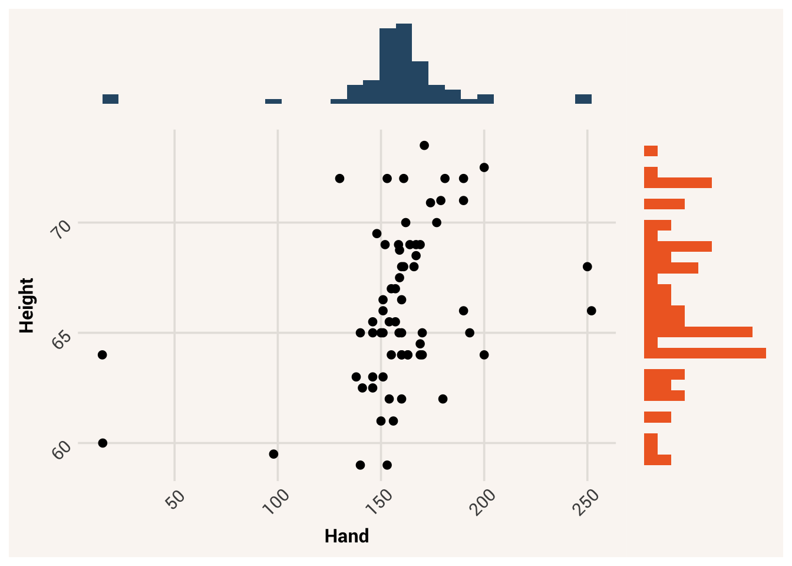
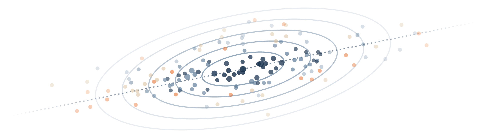

6 Patterns Among Multiple Variables

Note
From here on out we will pre-load all needed packages at the top of the chapter. You’ll see the status of this loading in the above indicator. Remember you have to use library(package) when writing R code on your own computer, however.
Examining distributions of single variables is an important starting place. This helps us describe that variable in an efficient way, which is one of the central research goals we discussed in Chapter 1. But as data analysts, our interests usually go beyond exploring patterns of variation in a single variable. Sometimes we want to predict what data of some variable will look like based on information in another variable. Sometimes we want to explain how one variable is a part of the data generation process for another. To accomplish these other goals, we need to consider multiple variables at once.
6.1 Visualizing two variables
Let’s say our research question is about both the height and sex of students in our dataset. Are female students typically taller or shorter than male students?1 This is a question about how observations vary across two variables at once. What’s the center and spread of Sex in our dataset, and how does the center and spread of Height change based on someone’s Sex value?
Like we did in Chapter 5, it is helpful to start thinking about multivariate distributions by visualizing them. Before, we made a histogram of one variable. We did this using the ggplot() function with just one argument in the aes() call: whatever variable we wanted to put on the x-axis.
TipExercise
Make a histogram of Height using the ggplot() function.
In a histogram, the variable you want to look at has values on the x-axis. The y-axis tells you the count of observations in the data that have each of those values. Because of this, a histogram is considered a one-variable plot - you can only look at variation in one variable at a time. How can we add a second variable to this plot?
One way is to split this histogram of everyone’s Height scores into two different histograms - one for each category of Sex. Which histogram a specific Height observation is assigned to depends on the value of that same observation on the Sex variable.
Because of the layering mechanism in the ggplot2 package, we can modify our basic histogram to make a two-variable histogram by simply adding a faceting layer. We do this by adding the function facet_wrap() to the plotting code. Inside that function, we pass the argument ~Sex. Sex is the name of the variable we want to use for splitting the data. The ~ (tilda) symbol in R generally means “varies by.” So ~Sex means “vary the histograms by their values on Sex”.
faceting - in data visualization, the process of splitting up a plot into subplots based on the value of some other variable
With these two histograms side by side, we can now see the shape, center, and spread of data within each value of Sex separately. We can also compare these histograms to each other, and to the overall histogram of Height that doesn’t include information about Sex. Some questions to ponder for the moment: does it look like the center of the Female and Male histograms are in different places? Does it look the spread of each sex-specific histogram is the same, wider, or narrower than the spread of the overall histogram?
Faceted histograms are a way we can visualize variables of specific data types - a quantitative variable on the x-axis, and a categorical variable that splits the data. This type of plot wouldn’t work if our variables were of different data types, thought. For instance, if we were looking at the relationship between Height and Hand. Hand is a continuous numeric variable, not cateogires, so there would be too many possible values to make separate plots for.
For two quantitative variables with many values, a different type of plot we can use is a scatterplot. In a scatterplot, one variable is on the x-axis and the other variable is on the y-axis, making a 2D space. Each observation in the dataset is represented by a single point positioned in this 2D space, with its x-coordinate corresponding to its value on the x-axis variable and its y-coordinate corresponding to its value on the y-axis variable.
scatterplot = a type of data visualization plot that shows the relationship between two quantitative variables by plotting each observation as a point in a 2D space
To make a scatterplot with the ggplot2 package, we replace the geom_histogram() function with a different geometric function, geom_point(). We also need to add information to the aesthetic mapping, so it knows to look for a variable to use on the x-axis AND the y-axis.
You can think of a scatterplot as a 2D histogram. If you shoved all the points down along the x-axis, they would pile up like in the histogram for height. Likewise if you shoved all the points to the left along the y-axis, they would pile like a histogram for Hand turned on its side. See Figure 6.1 for an example:
While we didn’t make different histograms for each value of
Note
In Chapter 7, we will learn about even more types of plots for each variable combination you might be interested in.
6.2 Distributions as probability
When we plot and summarize the center and spread of one variable, we are looking at where the middle of the distribution is and how wide the distribution is. But another way to think about these features is to treat the dataset as a big bag of marbles, and consider what would happen if we randomly drew one marble/observation from the bag. What is your best guess for what a randomly selected value would be? How confident are you that the next marble/observation you drew would be that value?
Earlier we calculated the mean of Height in our dataset to be 66.14. Now look at where that value is on the overall histogram of Height. It’s not the most common value in the histogram (indeed no one responded with decimals like this), but we know that it minimizes the sum of squares of a variable. In other words, if we use the mean as a guess for what a randomly-drawn value will be, we will be less wrong on average than if we used any other number to guess. For this reason, we can think of central tendency as representing what data values are probable.
But even if you are less wrong on average by guessing the mean, that doesn’t mean you’ll get it right for this specific guess. If you guessed the mean, how confident are you that you would be within 5 inches of the actual value? You’d probably be more confident if you were guessing about a distribution that had a standard deviation of 3 than if it had a standard deviation of 10. For this reason, we can think variation as representing how much uncertainty there is about what any specific data value will be.
6.3 Independence vs. association
Now let’s get back to talking about two variables. We will use the general notation \(x\) and \(y\) to know which one is which. When we are asking a research question that involves the relationship between two variables, what we are really asking is whether the variables are associated. If two variables are associated, this means using information from one variable helps you make better guesses about the value of the other variable.
association = a relationship between variables such that knowing the value of one improves predictions about the value of the other
Let’s see this in action. First, we will create two vectors that hold the Height values for Male and Female observations separately. Then we will look at their means and standard deviations.
If we didn’t know someone’s height and we had to guess, without any other information to help, our best guess would be the variable mean 66.14 but we would be uncertain that that was correct. We’d be wrong by about 3.58 inches on average.
However, if we know that the person in question was male, we could change strategy. Now we could focus only on the data in the Male distribution and use that mean for our guess. In other words, having some information about the person changes what our best guess is for them (from 66.14 to 69.28).
It also changed our level of uncertainty. Because the spread of the Male distribution is 2.57, which smaller than 3.58, our new guess is more likely to be correct than our original guess. There is still some variation we can’t predict, but we are more confident now.
This is the essence of association. If two variables are associated, knowing an observation’s value on one variable changes your guess and decreases your uncertainty about the value of the other variable. We just saw this happen with Sex and Height, so we would say these variables are associated. Another way people talk about this kind of relationship is to say the Sex explains or accounts for some of the variation in Height.
Not all variables are associated with each other. Let’s look at the faceted deviations of two other variables, SleepHours and StatsExperience:
TipExercise
Finish the code below to make faceted histograms of SleepHours on the x-axis, with different histograms for the different values of StatsExperience.
While the distributions don’t look exactly the same (there are more people without stats experience than with), focus on their centers and spreads. It looks like the typical number of sleep hours for someone with stats experience is not that much different than someone without stats experience. Indeed, when we calculate the mean of these:
These values are not all that different. When comparing the new standard deviations with that of the overall SleepHours distribution:
Knowing someone’s stats experience doesn’t much change our uncertainty about their sleep hours either. In this case, we wouldn’t say that prior stats experience is associated with sleep hours. We would say these variables are independent of each other.
independence = a relationship between variables where one variable contains no information to help make predictions about the value of the other variable
It’s important to emphasize here that when we say one variable \(x\) is associated with another variable \(y\), we don’t always mean that one causes the other. An association between the two just means that knowing the value of some observation on \(x\) improves our guess about what \(y\) is. This could be because of causation, but there are many other reasons two variables could be associated. Whenever we use the word “associated” in this book, make sure you’re not automatically assuming that a causal relationship is involved.
6.4 Covariation
We can summarize and quantitatively describe an association relationship like this, similar to how we summarized single-variable distributions last chapter. There are different kinds of association relationships between variables and correspondingly different methods of quantifying them.
6.5 Explaining one variable with another
Let’s start by loading a simple dataset that includes information about stats students:
TipExercise
Write code to draw a histogram of the variable Thumb, which corresponds to each person’s thumb length. Remember which function does this?
Quickly evaluating the distribution, it looks like most of the thumbs are between 40 and 80 mm long; the center of the distribution is somewhere around 60 mm; and the distribution is kind of normal-shaped, with most of the observations clustered around the middle, then just a few observations in the outer tails.
Let’s say we want to check some other variable to see if it explains the variation we see in thumb length. A starting place is to think about other variables that, if we knew someone’s score on that variable, would help us make a better guess about their thumb length. Below is a list of some of the variables in studentdata and descriptions of how they were coded. Which of these variables might be related to thumb length?
Sex: female, male, non-binary, or prefer not to answerRaceEthnic: White, Black, Asian, Latino, Middle Eastern, or OtherSiblings: Number of siblings someone hasIDLast: Last digit of their student ID numberCollegeYear: Year in collegeJob: Respondant’s job status; Not Working, Part-time Job, or Full-time JobMathAnxious: Agreement with the statement, “In general, I tend to feel very anxious about mathematics.” strongly agree, agree, neither agree not disagree, disagree, strongly disagreeStatsInterest: How interested respondant is in statistics; No Interest, Somewhat Interested, or Very InterestedGradePredict: Anticipated course letter gradeSleepHours: How much sleep respondant got the night beforeHeight: Height in inches
One variable that might explain the variation in thumb length is Sex. You might intuitively sense that male and female thumb lengths would differ from each other. But then again, even within a sex category, their thumb lengths vary too. So how big is the effect of sex? How much variation in thumb length can it explain?
In our basic histogram right now, we can’t see the effect of taking Sex into account. We don’t know which data points correspond to female, male, or other participants. But we can change this histogram to visualize the relationship between Thumb and Sex in a few ways. One way is by coloring or filling in the data in the histogram by Sex, assigning females to one color and males another.
To do this we use the fill = argument again in gf_histogram(), but instead of putting in a color we put a tilde (~) and then the name of a variable: fill = ~ Sex. Remember that a ~ in functions like this is like saying “vary by”, or “is explained by”, followed by the variable you care about.
Whenever you color data with another variable in gf_histogram(), it uses default colors. If you want to change them, we can use another handy function, gf_refine(), that will take an already-built histogram and make some changes to it. For example, here’s the R code to change the colors of this histogram. We will use the piping functionality from chapter 4 in order to chain multiple commands together.
The function gf_refine() takes a histogram object as a first argument, and then another function as a second argument that we want to apply to that histogram. In this case, we used the graphic function scale_fill_manual() which allows us to manually define the colors we want for each unique value in Sex (make sure to use no more and no fewer colors than values to be colored!)
Another way to examine the male and female data is to split the histogram we made into two different pictures: one for females and another for males. We can chain on (using %>%) the command gf_facet_grid() after gf_histogram(). This will split the base histogram into separate histograms of Thumb for females and for males in a grid.
Using either the colored histogram or the separate histograms, does it seem like thumb length varies as a function of sex?
Remember that putting something after the ~ means something gets changed on the x-axis. gf_facet_grid() works the same way. Putting the variable Sex after the ~ puts these two graphs in a row along the x-axis. Putting Sex before the ~ puts these two graphs in a column along the y-axis. The only difference is we have to include a period after the ~, because this function always expects something after the ~ but we don’t have any variable we want to plot along the x-axis.
This is more helpful than side-by-side because it’s easier to compare where the distributions are along the same Thumb axis. It seems that the distribution of thumb lengths for males is shifted higher relative to the female distribution.
Also, it is immediately apparent that there are fewer males than females. This is when a measure like density (rather than count) comes in handy - it lets you see the distribution relative to itself rather than the range of values somewhere else.
Adjust the following code to re-create these histograms as density plots.
TipExercise
Modify the code below to create density histograms.
Another way of thinking about Sex explaining variation in Thumb is to say that Thumb is really made up of two different distributions, one for males and one for females. Although the shape of these two histograms are roughly normal, the average male thumb is larger than the average female thumb. It almost seems like the whole male distribution is shifted higher along the x-axis. The center of the distribution is different across the two groups.
This isn’t to say that just because we know someone’s sex we definitely know their thumb length. After all, there are both males and females with longer thumbs and both males and females with shorter thumbs. This variation among members of the same group is called unexplained variation. When we combine all the thumbs together in a single histogram, we are able to see how spread-out the overall distribution is. This gives us an idea of the total variation. When we divide the distribution up and look separately at the two histograms, we can see the variation left unexplained by grouping into males and females.
Besides finding a difference in group means, notice that these group-specific histograms tend to have less variation than the single histogram. It’s as if some of the variation in Thumb has been reduced, or “accounted for” by Sex. Because we can only see the within-group variation after we divide the distribution up by Sex, another name for within-group variation is “leftover variation.”
Even though there is still a lot of variation in thumb length left over after taking out the role of Sex, it is true that if we know someone’s sex we can be a little better at predicting their thumb length. A little better may not be great, but it is better than nothing.
Now, remember any other variable you thought might be related to Thumb. Make a grid of histograms to investigate the association of that variable with thumb length. (Use a categorical variable for this exercise.)
TipExercise
Write some code to plot histograms of Thumb and another variable
Here are a few example histograms you could have made. The gray histograms on the left make a grid of thumb length based on year in college. The colorful histograms are based on Race/Ethnicity.
Of the two variables used to create the faceted histograms above (year in college and race/ethnicity), which do you think does a better job predicting thumb length? In other words, which one seems to reduce within-group variation the most?
6.6 Outcomes and explanatory variables
We now have a sense of what it means to explain variation in one variable by variation in another. In the previous section, for example, we saw that variation in thumb length could be explained, in part, by variation in sex. In this section we want to begin developing a language for describing the variables that play different roles in these relationships where one variable explains variation in another.
Up to this point, we have distinguished between qualitative variables and quantitative variables. But our desire to explain variation in one variable with variation in another variable leads us to make another distinction: that is, between which variable is explained and which one is doing the explaining.
The outcome variable is the variable whose variation we are trying to explain. It is the “target” thing we are trying to understand, and the “outcome” of some process we think led to it. In this course, the tools and methods we use will focus on a single outcome variable at one time.
The explanatory variables are the variables we use to explain variation in the outcome variable. Although we will initially consider only one explanatory variable at a time, later in this course we will allow for the possibility of using multiple explanatory variables at a time.
You may or may not have heard the terms “outcome variable” and “explanatory variable” before. We will use these terms throughout, but if you’ve taken statistics before, or read any research reports, you will no doubt have encountered a number of different terms used to represent the same distinction. Some of these are presented in the table below.
| Outcome variable | Explanatory variable |
|---|---|
| Dependent variable (DV) | Independent variable (IV) |
| Predicted variable | Predictor variable |
| Response variable | Treatment variable |
| Output variable | Experimental variable |
It is important to figure out whether a variable is quantitative or qualitative. But it is equally important to figure out whether a variable is an outcome or explanatory variable. Making this latter distinction requires a greater understanding of the context that the data pertain to, and the purpose for collecting the data. Let’s think about a situation and try to figure out what the outcome variable might be.
In the tetrismemories dataset, we have the results of an experiment where a researcher showed a traumatic video to participants and then randomly assigned them to one of four experimental conditions - no additional instruction (1), a reactivation task with photos from the video followed by playing tetris (2), playing tetris only (3), or the ractivation task only (4). Lastly, for the following 10 days, participants reported how many intrusive memories about the video they had.
To simplify things, let’s make a new variable called many_memories that codes whether someone had a high (>5) or low (up to 5) number of intrusive memories over the course of the experiment. Then the first six rows of the data frame for these two variables are shown below.
The experimental condition a participant was in was recorded by the variable called condition. The high or low memory classification is called many_memories. Which do you think is the explanatory variable, and which is the outcome?
This study was meant to understand what kind of intervention could reduce memories of traumatic experiences. Thus, many_memories is the outcome variable because it’s the variable we ultimately care about - it’s the one where we want to know what produces changes in it. The explanatory variable is condition, because the researchers manipulated it in order to see if that influenced variation in memories.
Because these are both categorical variables, it’s not possible to make a nice normal distribution histogram like we saw above. Histograms only work for numerical outcome variables. Instead, here’s a bar graph to visualize the distribution of many_memories (using the function gf_bar()).
You can use gf_facet_grid() with any plot, not just histograms. Try creating a bar graph of many_memories (like the one above), but chain on a facet grid to compare the outcome across conditions.
TipExercise
Create a bar graph of many_memories, then use gf_facet_grid() to compare the outcome across groups of condition.
6.7 Point and jitter plots
We have learned how to make visualizations of outcome variables as a function of explanatory variables by making histograms and bar graphs for each explanatory group.
A scatterplot is a common way to show the relationship between an outcome and an explanatory variable all on one plot. A scatterplot in ggformula can be made with the function gf_point(). Let’s try using gf_point() to examine Thumb lengths by Sex.
This is the first time we’re including both the explanatory variable and the outcome variable in the same function call, on either side of the ~ symbol. This results in a plot that, instead of making two separate histograms of the outcome variable for each explanatory variable, makes points in a 2D space that shows the value of each observation on each variable.
You can change the color of the points with the argument color (much like we did before) and the size of the points with size.
Sometimes with scatterplots like this, it’s difficult to make out all the points because they overlap each other. This is particularly a problem when you have two variables of categorical or ordinal data that can’t have more than a few values:
We can jitter these points, or spread them out a little bit, so that you can see all the individual points better. We’ll use the function gf_jitter() to create a jitter plot depicting Thumb length by Sex. This function is just like making a gf_point() plot, except that the points will be a little jittered both vertically and horizontally.
But now they’re too jittered - it’s hard to tell which points should correspond to each ordinal value. We can use the width and height arguments to change how the points get jittered. Height and width can be set to values between 0 and 1, which corresponds to the proportion of one unit in the variable value.
Much easier to see! In a jitter plot, a point being more to the left or right within the group doesn’t mean anything. The jitter is some random repositioning so the points do not overlap too much and obscure how many data points have that value.
Just like a scatterplot, in a jitter plot you can change the size of the points by including the argument size. You can also change the transparency of the points using the argument alpha. alpha can take values from 0 (more transparent) to 1 (more opaque). This is another way of showing how many points are at one place - the darker the color, the more observations there.
TipExercise
Try making jitter plots for a few of the other variables from the student dataframe. Play around with some of the arguments such as height, width, color, size, and alpha (here are the possible arguments). Try making a jitter plot one way, then switching which variable is on the x-axis and which on the y-axis. Does it work both ways?
There isn’t any restriction on what kind of variable you can put in the x- or y-axis for a jitter plot. You can put an outcome or explanatory variable in either position. You can also put a categorical or quantitative variable in either position. For example, in this jitter plot, we have put Sex on the y-axis and Thumb length on the x-axis.
Even though you can put the outcome variable anywhere, it is more common to put the outcome variable on the y-axis. We will follow that convention in our jitter plots because it conforms with what people expect, and thus makes them easier to interpret.
6.8 Quantitative explanatory variables
So far we have considered both numerical (e.g., Thumb) and categorical (e.g., many_memories) outcomes. We have also looked at some categorical explanatory variables (e.g., Sex and condition). But we haven’t yet looked at any examples of quantitative explanatory variables.
There isn’t any reason to think that we couldn’t. Perhaps a quantitative variable like height might help us predict thumb length. But how do we show variation between quantitative explanatory and quantitative outcome variables? There’s no unique “bins” for the explanatory data values.
You might think the best option is to create those bins, and turn the quantitative variable into a categorical one by, say, grouping everyone taller than the median height value into one bin and everyone shorter than the median into another. Or making three groups the same way by making bins for “short,” “medium,” and “tall.” We did this earlier by binning number of intrusive_memories into high and low categories.
This is called dichotomozing, but it is actually bad practice for the majority of use cases. When we do this, we are throwing away some of the information we have in our data. We know exactly how many inches tall each person is - why not use that information instead of just categorizing people as either tall or short?
Let’s try another approach, a scatterplot of Thumb length by Height. Try using gf_point() with Height on the x-axis. Remember: when making plots, the convention is to put the outcome variable on the y-axis and the explanatory variable on the x-axis.
You can see the dots scattered around, but on a general upward trend. If you were to visualize a distribution on thumb for each general value of height, you would see that the distribution is slowly moving up. A student who is taller also tends to have a longer thumb, but there’s not an exact relationship.
So, just as when we explained the variance of Thumb with a categorical variable, there appears to be some variation in Thumb that is explained by Height. But there is also variation left over after we have taken out the variation due to Height. I.e., there is variation on Thumb within the same value of Height.
6.9 Putting multiple plots together
The gf_point() and gf_jitter() functions are useful. They emphasize that data are made up of individual numbers, and yet they help us notice patterns in those individual points. There are times, however, when we want to transcend the individual data points and focus only on data summaries.
Boxplots are helpful in this regard, and are especially useful for comparing the features of the distribution of an outcome variable across different levels of a categorical explanatory variable.
Here’s how we would create a boxplot of Thumb length broken down by Sex.
In making boxplots we can play with the arguments color and fill much like we did before.
Boxplots visually tell us the quantiles of the data. The rectangle at the center of the boxplot shows us where the middle 50% of the data points fall on the scale of the outcome variable (i.e., the IQR). The thick line inside the box is the median. There are also lines, called whiskers, above and below the box. Another name for the boxplot is box-and-whisker plot. The points that appear past the whiskers are considered outliers by this function (anything that is greater than 75%ile + 1.5*IQR, or less than 25%ile - 1.5*IQR). This isn’t the only way to define an outlier, but is a pretty common one. The length of the whiskers depicts the max and min of the data range - when there are outliers, the end of the whisker depicts the max or min value that is not considered an outlier.
In ggformula, we can chain on multiple functions to put multiple types of plots in the same image. It’s like adding a layer of one plot on top of a layer of the first one below it. When chaining between multiple ggformula plots, the later functions “inherits” the same variables and data so we don’t need to type those in again. Handy!
In this situation where we are looking at the variation in Thumb length by Sex, the boxes are in different vertical positions. The male box is higher than the female box. How do you think we should interpret the placement of the boxes?
Instead of an explanatory variable like Sex, let’s try one that is unlikely to help us explain the variation in thumb length.
TipExercise
Modify this boxplot below to look at Thumb length varying by Job instead of Sex.
Notice that in this boxplot, the boxes are at approximately the same vertical position and are about the same size. The one exception is the box for the full-time level of Job. The full-time box doesn’t contain many datapoints, so, we wouldn’t want to draw any conclusions about the relationship between working full time and thumb length. Most of the students in the studentdata data frame either work part-time or not at all. The thumbs of students with no job are not much longer or shorter than thumbs of students with part-time jobs. But within each group, their thumb lengths vary a lot. There are long-thumbed and short-thumbed students with part-time jobs and with no jobs. Thus, it doesn’t seem like job type explains variation in thumb length.
In summary, visualization helps see variation in data, and patterns of co-variation between variables reveals how they are related to each other. Below are tables of all the visualization methods we learned in this chapter. It would be very helpful to keep this in your R cheatsheet to refer to whenever you need!
Visualizations for one variable
| Variable | Visualization type | R code (gg_formula package) |
|---|---|---|
| Categorical | Bar graph | gf_bar() |
| Quantitative | Histogram | gf_histogram() |
| Boxplot | gf_boxplot() |
Visualizations for two variables
| Outcome variable | Explanatory variable | Visualization type | R code (gg_formula package) |
|---|---|---|---|
| Categorical | Categorical | Faceted bar graph | gf_bar() |> gf_facet_grid(.) |
| Quantitative | Categorical | Faceted histogram | gf_histogram() |> gf_facet_grid(.) |
| Boxplot | gf_boxplot() |
||
| Jitter plot | gf_jitter() |
||
| Categorical | Quantitative | Same as above, axes flipped | |
| Quantitative | Quantitative | Scatterplot | gf_point() |
6.10 Chapter resources
6.10.1 Learning goals
After reading this chapter, you should be able to:
- Explain what “explain” means
- Change plots with faceting and colors
- Make the corre ct type of plot for each type of quantitative/categorical variable relationship
6.10.2 New concepts
- explain variation: When knowing the value on some variable A helps you predict the value on another variable B better than random guessing, then variable A explains some variation in variable B.
- effect: If a variable A explains variation in variable B, there is an effect of variable A. The magnitude of the effect is how much variation A explains.
- unexplained variation: Variation in a variable that is not currently explained by another other variable under consideration.
- outcome variable: The variable we are interested in explaining. Also called the predicted, response, output, or dependent variable.
- explanatory variable: The variable we want to use to explain variation in an outcome. Also called the predictor, treatment, experimental, or independent variable.
- bar graph: A type of data visualization that plots values of a categorical explanatory variable on the x-axis and number of data points in each category on the y-axis.
- scatterplot: A type of data visualization that plots values of an explanatory variable (categorical or numeric) on the x-axis and values of an outcome variable (categorical or numeric) on the y-axis.
- jitter: The slight repositioning of datapoints on a graph to aid in visualizing all points. Only a visual aid; does not change the actual value of the data points in the dataset.
- dichotomization/binning: The process of dividing an interval variable into fewer bins and treating it as an ordinal or categorical variable.
6.10.3 New R functionality
6.10.4 Further reading
You may have an instinctual answer to this already, but it’s always good to back up our pre-concieved notions with data!↩︎